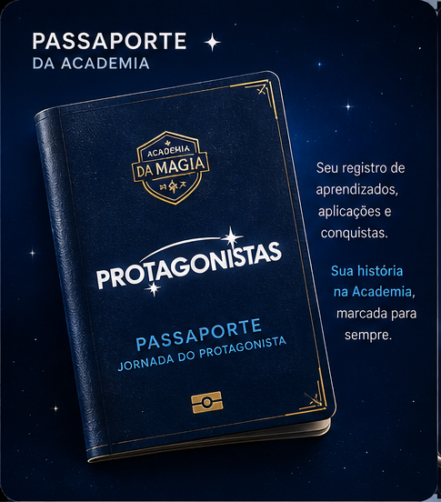
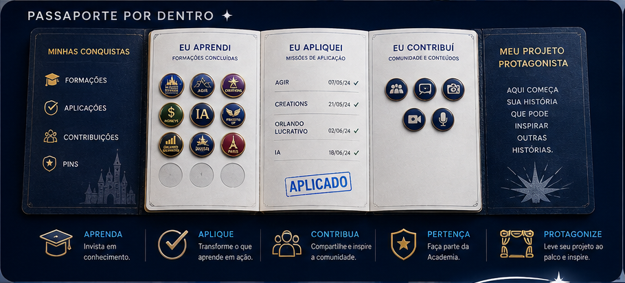
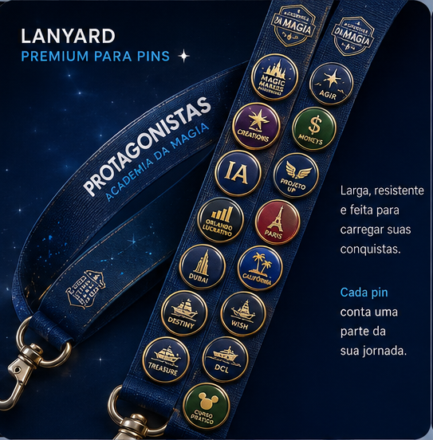
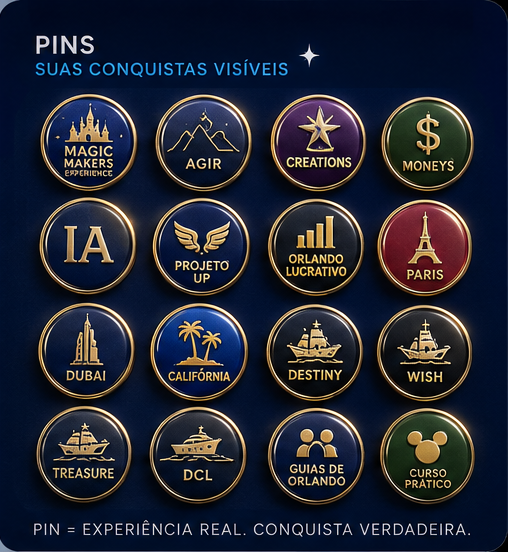
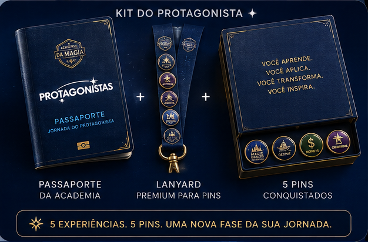

JORNADA DO PROTAGONISTA ✦
Sua evolução dentro da Academia merece ser marcada para sempre.
Curso concluído, missão aplicada, experiência vivida, conteúdo compartilhado — tudo isso costuma desaparecer numa pasta de certificados que ninguém abre de novo. O Kit do Protagonista transforma cada uma dessas conquistas em algo que você guarda, carrega e mostra: um passaporte, um lanyard premium e os pins que contam a sua história dentro da Academia.
5 experiências. 5 pins. Uma nova fase da sua jornada.

A FILOSOFIA POR TRÁS DO KIT ✦
Todo protagonista carrega provas da própria jornada.
Ninguém se lembra do PDF do certificado. Todo mundo se lembra do dia em que ganhou a medalha, o distintivo, o selo no passaporte. A Academia da Magia decidiu tratar o seu progresso do mesmo jeito.
Progresso que se vê
Cada formação concluída, missão aplicada e contribuição feita vira uma página carimbada no seu passaporte — não um arquivo perdido no e-mail.
Motivação que se carrega
O lanyard sai com você da Academia. Cada pin nele é um lembrete físico de que você já foi capaz de aprender e aplicar de verdade.
Identidade que se constrói
Protagonista não é quem assiste às aulas. É quem acumula aplicações, experiências e contribuições reais — e tem como provar isso.
O REGISTRO DA SUA JORNADA
Passaporte por dentro ✦
Cada página do seu passaporte é um espelho do seu progresso real dentro da Academia: o que você aprendeu, onde aplicou, com quem contribuiu e o projeto que colocou o seu nome no palco.

Aprenda
Invista em conhecimento. Cada formação concluída vira um registro na sua página "Eu Aprendi".
Aplique
Transforme o que aprende em ação. Suas missões aplicadas ganham data e o carimbo "Aplicado".
Contribua
Compartilhe e inspire a comunidade. Sua página "Eu Contribuí" guarda o que você devolveu à Academia.
Pertença
Faça parte da Academia. As Minhas Conquistas reúnem formações, aplicações, contribuições e pins num só lugar.
Protagonize
Leve seu projeto ao palco e inspire. A última página do passaporte é reservada para o seu Projeto Protagonista.

LANYARD PREMIUM PARA PINS ✦
Larga, resistente e feita para carregar suas conquistas.
Não é um crachá qualquer: é a peça que vai junto com você para as aulas, os eventos e as experiências da Academia — exibindo, pin a pin, até onde a sua jornada já chegou.
Cada pin conta uma parte da sua jornada.
PINS ✦
Suas conquistas visíveis.
O lanyard tem espaço para muito mais do que os 5 pins do Kit inicial — ele foi desenhado para crescer junto com você, à medida que novas formações, aplicações e experiências entram no seu passaporte.
- Formações & aplicações Magic Makers Experience, AGIR, Creations, Moneys, IA, Projeto UP, Orlando Lucrativo, Curso Prático
- Experiências internacionais Paris, Dubai, Califórnia, Destiny, Wish, Treasure, DCL
- Comunidade Guias de Orlando
Pin = experiência real. Conquista verdadeira.

O KIT COMPLETO ✦
Kit do Protagonista
Você aprende. Você aplica. Você transforma. Você inspira. O ponto de partida da sua jornada cabe numa caixa só.

Passaporte da Academia
Seu registro de aprendizados, aplicações e conquistas.
Lanyard Premium para Pins
Para carregar sua jornada com você, todos os dias.
5 Pins conquistados
Cada um marcando uma experiência real, pronto para crescer.
5 experiências. 5 pins. Uma nova fase da sua jornada.
PERGUNTAS FREQUENTES ✦
Antes de começar sua jornada
O que é o Passaporte da Academia?
É o seu registro pessoal dentro da Academia da Magia: uma página para o que você aprendeu, outra para o que aplicou, outra para o que contribuiu com a comunidade e uma última reservada para o seu Projeto Protagonista.
Como um pin é conquistado?
Cada pin representa uma experiência real — uma formação concluída, uma missão aplicada ou uma vivência internacional da Academia. Nada de pin decorativo: pin é conquista verdadeira, registrada no seu passaporte.
O que vem no Kit do Protagonista?
O Passaporte da Academia, o Lanyard Premium para Pins e 5 pins já conquistados — o ponto de partida para começar a registrar a sua jornada.
O lanyard comporta quantos pins?
Muito mais do que os 5 iniciais do Kit. Ele foi feito com espaço de sobra para acompanhar todas as formações, aplicações e experiências que ainda estão por vir na sua jornada.